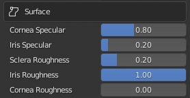
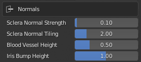

Eyes
Eye Composition
The eyes and the surrounding area have a large amount of detail and flexibility. The following are the “eye relevant” parts of the character model.
Eye Objects
Eye Occlusion - defined by the Std_Eye_Occlusion_R & _L materials in the CC_Base_EyeOcclusion object.
TearLine - defined by the Std_Tearline_R & _L materials in the CC_Base_TearLine object.
Eyeball - defined by the Std_Eye_R & _L and Std_Cornea_R & _L in the CC_Base_Eye object.
Eyelashes - defined by the Std_Eyelash material in the CC_Base_Body object.
The parameters for each of the materials can be manipulated in the Material Parameters dropdown of the tool via the selection of the relevant object and the selection of the material from the Material Properties tab of the properties pane. This is discussed in more detail here.
Eye Refraction
There are two types of eye refraction available (summarized below)
Parallax - Approximated Parallax Refraction using a single cornea material. In the Eevee render engine this material allows both Sub-Surface Scattering and Receiving Shadows

Parallax Refraction
SSR - Screen Space Refraction using a transmissive and transparent cornea material over an opaque iris material. In the Eevee render engine this material cannot have Sub-Surface Scattering and cannot receive full shadows

Screen Space Refraction
When the character is imported, the Parallax materials are built by default. If you wish to switch to SSR materials then navigate to the Build Settings dropdown of the tool and find the section called Eye Refraction.
Eye Refraction Settings with SSR selected
Select the type of refraction required and then click Rebuild Advanced Materials.
Eye Parameters
Eye Occlusion
Eye Occlusion parameters are defined in the Std_Eye_Occlusion_R and Std_Eye_Occlusion_L materials in the CC_Base_EyeOcclusion object. These parameters can be adjusted simultaneously as linked materials.
Base Color & Opacity
Hardness - Eye occlusion alpha channel exponent. Note: Small exponent values will tend to raise all the values in the alpha map towards 1 and as such cause the whole eye occlusion to become more opaque whereas larger values will give less opacity.
|
Displacement
Displace / Top / Bottom / Inner / Outer - These values determine the shape of the eye occlusion object iteself.
|
TearLine
TearLine parameters are defined in the Std_Tearline_R and Std_Tearline_L materials in the CC_Base_Tearline object. These parameters can be adjusted simultaneously as linked materials.
Specular - Controls the amount of specular reflection.
|
Eyeball
TearLine parameters are defined in the Std_Eye_R, Std_Eye_L, Std_Cornea_R and Std_Cornea_L materials in the CC_Base_Eye object. These parameters can all be adjusted simultaneously as linked materials.
Base Color
AO Strength - Blending Factor controls the multiply blending of the AO map over the eye color map.
|
Eye Shape
Sclera Scale - Scaling factor for the sclera texture (effectiveley controls the visibility of blood vessels).
|
Corner Shadow
Shadow Radius - Radius of an circular inverse shadow mask, which at low values will draw shadow over the corners of the eye (at very small values it will shadow the entire eye).
|
Surface
 |
Cornea / Iris Specular - Controls the amount of specular reflection in the Cornea and Iris respectively.
|
Subsurface
Subsurface Scale - Multiplier for the ‘Subsurface Radius Vector’ constructed below.
|
Depth and Refraction
Iris Depth - Controls the depth of the iris (using a blender displacement modifier of the relevant vertex group).
|
Normals
 |
Sclera Normal Strength - Multiplier to control the strength of the sclera normal map.
|
Emission
Sclera Emission Color - Emissive color of the sclera to be multiplied with an exported emission map.
|
Eyelash
The Std_Eyelash material is part of the CC_Base_Body object and is a standard PBR Material. |
Note
A general discussion of PBR materials can be found in the Blender Documentation.